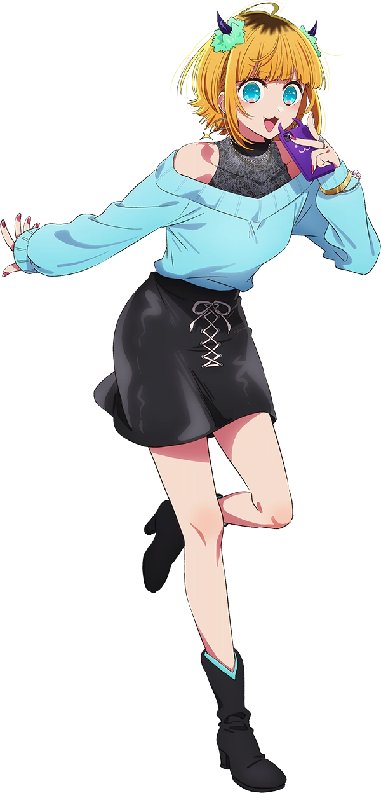
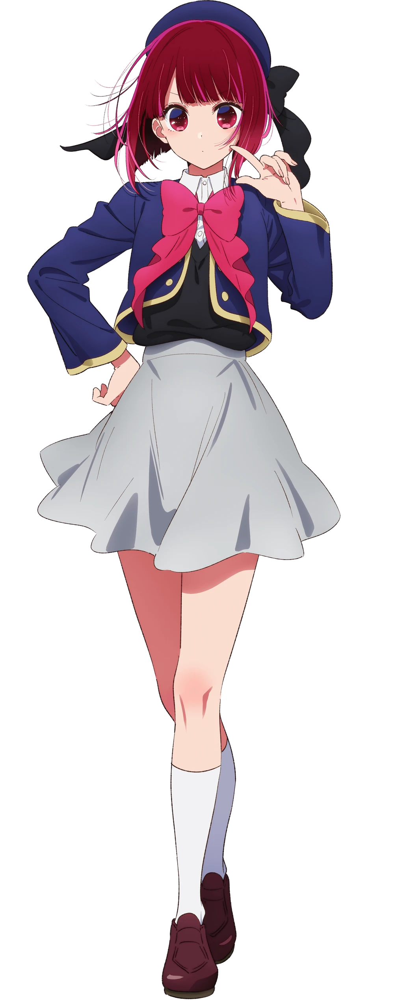

B-Komachi「Ｂ小町?」 — айдол-группа, связанная с Ichigo Production, Inc. У группы есть два воплощения с одинаковым названием.
Первоначальное воплощение состояло из Ай Хосино и трех других участников. После более чем десяти лет деятельности она распалась через два года после смерти Аи, которая была ее козырем и центром.
В его нынешнем воплощении три участницы: Руби Хосино, Кана Арима и Мем-Чо.
Нынешнее поколение началось с того, что дочь Аи Хосино, Руби Хосино, присоединилась к Ichigo Production, Inc, чтобы стать айдолом, официально перезапустив айдол-группу спустя более десяти лет. Поскольку Strawberry Production с нетерпением ждет пополнения новой айдол-группы, к ней присоединилась Кана Арима, которую рекомендует Аква Хосино и делает все возможное, чтобы заставить ее согласиться на присоединение. Руби пришла в голову идея взять на себя мантию Би-Комачи и возродить группу в новом воплощении после съемок совместной работы с Пиеоном. После завершения производства реалити-шоу LoveforReal к группе присоединился стример Мем-Чо, которого завербовал Аква.
Благодаря каждому каналу связи, используемому группой, ее участниками и ее агентством, новый Би-Комачи приобрел значительную популярность, следуя по стопам славы своего первоначального воплощения. Их поездка в Миядзаки для создания музыкального клипа имела заметный успех. Руби пошла по стопам Аи, став неповторимо очаровательной, хотя и с более мрачной атмосферой.

Руби Хосино「星ほし野の瑠る美び衣い, Хосино Руби?」, чаще называемая просто Руби「ルビー, Руби?」 — главная героиня женского пола и один из главных персонажей Oshi no Ko. В своей предыдущей жизни она была известна как Сарина Тендоджи, неизлечимо больная пациентка, о которой заботился Горо Амамия, а после ее смерти она перевоплотилась в ребенка своего любимого кумира Ай Хосино.
Пренебрегаемая родителями в предыдущей жизни и будучи поклонницей Аи, она очень наслаждалась своей новой жизнью, когда ее новая мать учила ее быть айдолом с раннего возраста. К сожалению, эта счастливая жизнь закончилась, когда Ай был убит невменяемым фанатом. После этого, решив осуществить мечты своей матери, она при поддержке своих друзей реформировала айдол-группу Ай.
Мем-Чо「MEMめむちょ, Мему-чо?」, настоящее имя неизвестно, является главным второстепенным персонажем в Oshi no Ko. Она популярный ютубер, бывший тик-токер и участница возрожденной группы B-Komachi.
Упустив свой шанс стать айдолом из-за семейных обстоятельств, она, тем не менее, сумела стать популярной стримершей, а ее известность обеспечила ей место в реалити-шоу знакомств LoveForReal. После завершения шоу ей наконец-то дали еще один шанс осуществить свою мечту, когда ее коллега по актерскому составу Аква пригласила ее присоединиться к B-Komachi, а другие участники приняли ее, несмотря на то, что она уже давно вышла из зрелого возраста айдола.
Первый концерт B-Komachi
Кана Арима「有あり馬ま かな, Арима Кана?」 — главный второстепенный персонаж в Oshi no Ko. Она знакома с детства Аквы и Руби Хосино и потрясающая детская актриса, хотя с годами ее популярность пошла на убыль. Она также является центром возрожденной айдол-группы B-Komachi.
Несмотря на свой талант, она в конечном итоге получила меньше работы из-за того, что с ней было трудно работать, что заставило ее изменить свой актерский стиль, чтобы выжить в индустрии. Однако после новой встречи с Аквой и Руби и вербовки в Би-Комачи, а также благодаря соперничеству с Аканэ Курокавой, она постепенно начала снимать кандалы, которые наложила на себя.